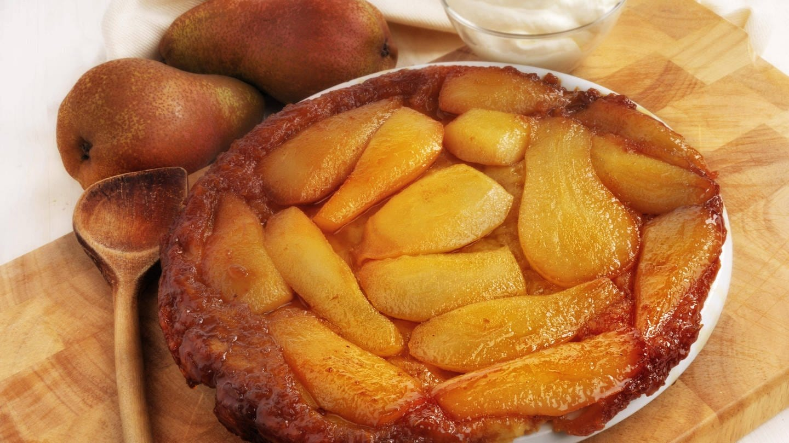

Tarte Tatin

Conseils de préparation
Etape 1 : Préparer le caramel : Déposer le beurre en dés dans une casserole, puis verser par dessus le sucre. Laisser cuire à feu doux pendant 5 min sans mélanger, le caramel se fait tout seul.
Etape 2 : Déposer la caramel sur le fond d'un plat à tarte.
Etape 3 : Ajouter les pommes coupés en gros dés, puis recouvrir de la pâte brisée.
Etape 4 : Enfourner pendant 25 min au four à 210°C (thermostat 7).
Pour finir : Servir tiède avec une boule de glace vanille.
Notre avis
Recette facile et gourmande qui conquira tout vos invités dès la première bouchée.